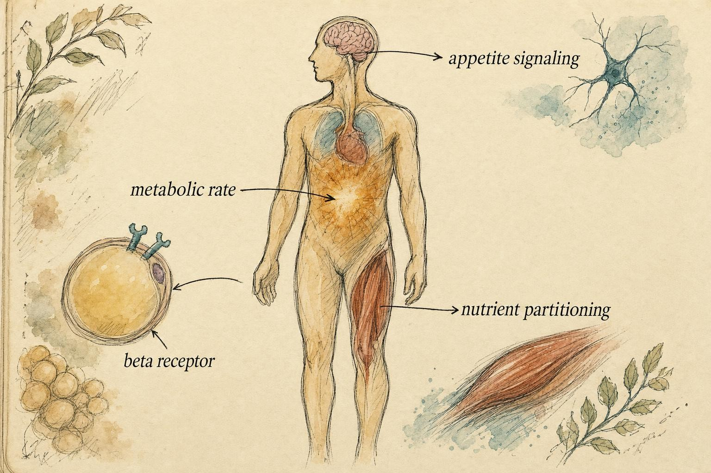
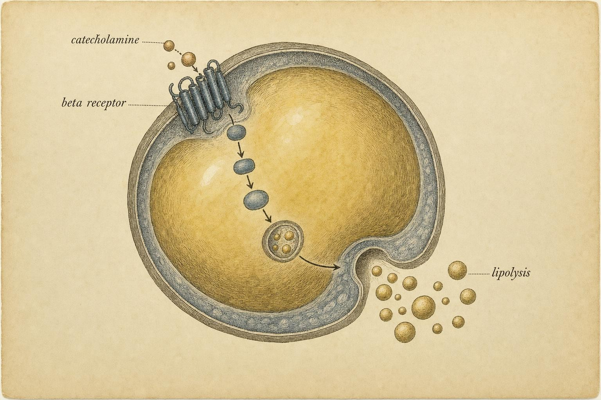
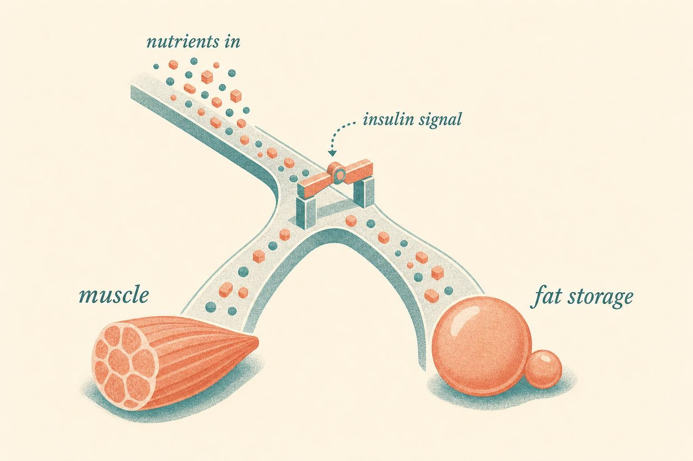

The Pharmacological Frontier: Mechanisms at the Boundary
Four drug classes, mapped onto the physiology you already know, and the line that keeps understanding from turning into a decision that is not yours to make.
Renata, a 37-year-old physical therapist assistant and recreational triathlete who has worked through this course chapter by chapter, is the person whose situation threads through the rest of it. Eight months into a fat-loss phase that started well and then stalled, she found a forum post promising a "metabolic reset" that would finish what her deficit, her protein targets, and her sleep coaching from earlier chapters had not. The post named a compound she had never heard of, described it in half-sentences borrowed from real biochemistry, and linked to a seller. Renata is not a patient in this course and not a case for anyone to solve. She is a stand-in for the kind of honest, half-informed hope that pharmacological marketing is built to exploit, and by the end of this chapter you will understand her situation, and the compound she found, more precisely than the forum post ever could.
Everything in the seven chapters before this one has been leverage you can use directly: energy balance, adrenergic tone, thermogenesis, exercise modality, insulin sensitivity, thermogenic supplements, and satiety. This chapter is different. It surveys pharmacological levers that touch those same cascades, but strictly at the level of mechanism and intended benefit. There is no dosing here, no protocol, no cycle, no stack, and no sourcing. There is nothing to apply. There is only comprehension, and the boundary that comprehension is meant to sharpen.
By the time this chapter reaches its last page, you will be able to take apart a claim like the one Renata found, piece by piece: what it is actually claiming, which physiological step it would have to act on, how strong the evidence behind that claim really is, and why the decision to use it was never yours, or hers, to make alone.
What this chapter is, and what it refuses to be
Let us be plain about the contract before we start, because it shapes how you should read every paragraph that follows.
This chapter will help you do three things. First, name what each of four drug classes is intended to do. Second, point to the precise physiological step where it acts, using the same master map you have been building since Chapter 2. Third, and most importantly, articulate why each of these tools lives inside a clinical relationship and outside an educational one.
This chapter will not tell you how much, how often, in what order, or where to obtain anything. That silence is not squeamishness. It is the correct professional posture. Decisions about pharmacology belong to qualified prescribing clinicians operating inside a medical relationship, with a diagnosis, a monitoring plan, and a duty of care that you do not hold, whether you are reading this for yourself or to support someone you care about. When you finish reading, you should feel more competent and more restrained at the same time. That combination is the entire point.
A quick word on why this is the most cross-referenced chapter in the course
You cannot understand these agents in isolation, because none of them invents a new physiology. Each one grabs a lever you already know and pushes it harder, faster, or more continuously than diet and training can. Thyroid hormone amplifies the metabolic-rate signal from Chapter 3. Beta-agonists press the beta-receptor step from Chapter 2. Metabolic peptides and metabolic mimetics act on the appetite and mitochondrial-metabolic circuitry of Chapter 7. Partitioning agents work through the insulin-related signaling of Chapter 5. If any of those cascades feels hazy, this is the moment to glance back, because the pharmacology only makes sense sitting on top of them.
This chapter is also, deliberately, the narrowest possible slice of a much larger picture. Three other Gemini Education courses exist specifically to go deeper than a survey chapter honestly can. This course, Advanced Fat Loss, stays at the level of mechanism and intended benefit throughout. D1, Anabolic-Androgenic Steroids and Ancillaries, spends thirteen chapters on the biochemistry, delivery kinetics, and organ-by-organ risk of testosterone and its relatives, including a full chapter each on the thyroid hormones and the beta-agonists surveyed below. D3, Peptides I, Growth, Metabolic, and Body Composition, and D4, Peptides II, Repair, Immune, Neuro, and Systemic, spend eighteen combined chapters walking through the peptide and small-molecule library compound by compound, including the exact metabolic and mitochondrial candidates this chapter introduces. If a name below catches your attention and you want the full pharmacology, that is where it lives. This chapter's job is narrower: give you enough mechanism to recognize what a claim is actually describing, and enough boundary to know what to do next.

The four classes surveyed here do not create new physiology; they push levers you already mapped." data-image-idx="0" style="display:block;max-width:100%;max-height:75vh;height:auto;width:auto;margin:0 auto;cursor:pointer;">Class one: thyroid hormone as a systemic metabolic-rate signal
Start with the actionable frame, then build the mechanism underneath it.
The intended benefit of exogenous thyroid hormone, in the context people imagine using it for fat loss, is a raised metabolic rate. It is the closest thing physiology offers to a master dial on energy expenditure. That is precisely what makes it seductive, and precisely what makes it dangerous, because there is no such thing as a dial that only turns your fat cells and leaves your heart, bone, and muscle alone.
Refresher: what thyroid hormone actually does
Thyroid hormone, principally the prohormone thyroxine (T4) and the active hormone triiodothyronine (T3), sets the pace of basal metabolism across nearly every tissue in the body (Mullur et al., 2014). It acts through nuclear thyroid hormone receptors in the alpha and beta isoforms, which are transcription factors. When T3 binds, it changes which genes are read, and those genes govern how much oxygen a cell burns at rest. This is why thyroid status shows up as basal metabolic rate on the whole-body level: it is the sum of millions of cells running their machinery a little faster or slower.
The mechanistic lever that matters most for our purposes is local conversion. Much of the T3 that acts in a given tissue is made on site, when the enzyme type 2 deiodinase (D2) strips an iodine from T4 to produce active T3 inside brown adipose tissue, skeletal muscle, and the hypothalamus (Mullur et al., 2014). Thyroid status is therefore not just a single number circulating in blood; it is also a local decision each tissue makes about how much of that circulating prohormone to switch on. A separate enzyme, type 3 deiodinase, does the opposite job, inactivating thyroid hormone, and the balance between activation and inactivation is part of what keeps a healthy thyroid axis from behaving like a simple on-off switch.
This is the connection back to Chapter 3. Thyroid hormone does not merely raise a global average; it feeds directly into the thermogenic machinery you studied there, supporting the uncoupling protein 1 (UCP1) pathway in brown and beige fat that governs how much of a cell's stored energy gets converted to heat rather than kept in storage (Mullur et al., 2014). A raised thyroid state pushes the same lever that cold exposure and high-intensity interval training push in that chapter, only through a hormonal signal instead of a behavioral one.
Why more is not simply better
Here is the honest grading. A hyperthyroid state does raise resting energy expenditure, lipolysis, and gluconeogenesis (Mullur et al., 2014). It also raises heart rate, strains cardiac tissue, accelerates bone turnover, and can drive muscle loss, because thyroid hormone is catabolic when it runs high. The body did not design a fat-only setting. When you push the systemic metabolic-rate signal above the level your own axis would choose, you push it everywhere at once.
This is also why the axis is monitored with more than a single number. A clinician assessing thyroid status typically looks at thyroid-stimulating hormone (TSH), the pituitary signal that drives the gland, alongside free T4 and sometimes free T3, because the relationship between these markers is what reveals whether the axis is behaving normally, running hot, or running suppressed. A single elevated or low value in isolation can be a snapshot of a body under strain, a person mid-illness, or a genuine thyroid disorder, and telling those apart is exactly the kind of pattern recognition that belongs to training and experience a chapter cannot substitute for.
There is a further subtlety worth holding onto. Thyroid hormone cross-talks with the satiety system, modulating appetite through interactions with leptin and other appetite peptides (Mullur et al., 2014). So a lever that appears to be purely about "burning more" also nudges "eating more." The physiology resists the simple story every time.
The deeper pharmacology of thyroid hormone used off-label in a performance or fat-loss context, including how it interacts with androgen use and the axis-suppression pattern that tends to follow, is covered at full depth in D1, chapter eleven, Non-AAS Ergogenics II, Thyroid Hormones. This chapter stays at the level of mechanism only, on purpose.
Notice what just happened. A slowed metabolism during a long deficit is expected physiology, and you addressed it in earlier chapters. A cluster of symptoms that looks like genuine dysfunction is a different thing entirely, and the boundary between "adaptive slowdown you work around" and "possible pathology that needs evaluation" is one you must be able to feel in real time, whether it shows up in your own body or in a conversation with someone else.
Class two: beta-agonists on the adrenergic pathway
Front-loaded takeaway: beta-agonists are drugs that press the exact beta-receptor step you studied in Chapter 2, forcing the "release and burn fat" signal to fire harder and longer than your own catecholamines would. Some also carry a muscle-sparing or even muscle-building effect. That combination is why they are studied, and why they are controlled.
Refresher: the beta-receptor step
Recall the adrenergic cascade. Catecholamines such as adrenaline and noradrenaline bind beta-adrenergic receptors on the surface of fat and muscle cells. That binding activates adenylyl cyclase, raises cyclic AMP (cAMP) inside the cell, activates protein kinase A (PKA), and switches on the lipase machinery that liberates stored fatty acids. This is the ignition step of lipolysis, and it is the step every beta-agonist is designed to grab.
There are three beta-receptor subtypes, and the distinctions are not trivia; they define which drugs act where. The beta1 receptor is concentrated in cardiac tissue and is central to why any drug that activates beta receptors broadly raises heart rate and cardiac workload as a direct, on-target effect, not a side reaction that could be engineered away. The beta2 receptor is prominent in adipose and skeletal muscle. Hostrup and Onslev (2021) review it as a re-emerging pharmacological target that regulates both fat cell lipolysis and skeletal muscle metabolism. Importantly, they document that people with obesity often have reduced beta2-receptor abundance and blunted catecholamine sensitivity, which is a beautiful and frustrating example of the receptor-level adaptation you met earlier: the harder the system has been pushed, the less responsive the receptor becomes.
The beta3 receptor is the star of brown and beige fat. Cero and colleagues (2021) showed that functional beta3 receptors are present in human brown adipose depots and that intact beta3 signaling is required for the downstream lipolytic and thermogenic machinery to run. In their work, a selective beta3-agonist stimulated both lipolysis and heat production in primary human brown and beige adipocytes. This is the pharmacological version of the thermogenesis lever from Chapter 3, reached through the receptor step of Chapter 2.
The repartitioning effect, told honestly
The reason beta2-agonists draw so much attention is the so-called repartitioning effect: in livestock, rodents, and some human data, selective beta2-agonists have been observed to increase muscle mass while reducing fat (Hostrup & Onslev, 2021). A single agent that seems to move both sides of body composition in the desired direction is exactly the shortcut people dream about.
Now the grading. Hostrup and Onslev (2021) are careful to frame the therapeutic limitations and antidoping context, because these agents do not act only on fat and muscle. Beta receptors sit throughout the cardiovascular system and elsewhere, so pushing them systemically carries cardiac and other consequences. The Endocrine Society scientific statement on performance-enhancing drugs makes the wider point bluntly: adverse effects across performance-enhancing drug classes, stimulants included, are widely underappreciated by the very people using them, and the majority of users are not elite athletes under medical supervision but recreational lifters self-managing without oversight (Pope et al., 2013). A repartitioning effect on paper is not the same as a safe intervention in a person.

Every beta-agonist targets this ignition step: receptor binding that triggers the release of stored fat." data-image-idx="1" style="display:block;max-width:100%;max-height:75vh;height:auto;width:auto;margin:0 auto;cursor:pointer;">The deeper pharmacology of clenbuterol and other beta-agonists used in a performance context, cardiac risk markers included, is covered at full depth in D1, chapter ten, Non-AAS Ergogenics I, Clenbuterol and Beta-Agonists. That chapter walks through the same beta1, beta2, and beta3 distinctions introduced here, then goes the rest of the way into dose-independent risk patterns and monitoring, territory this chapter does not enter.
Class three: metabolic peptides, mimetics, and the appetite and metabolic signal
Actionable frame first. This class is the most crowded of the four, because "metabolic peptide" has become a marketing category as much as a scientific one. The compound Renata found belongs somewhere in this class, and untangling it means separating three genuinely different things that get sold using the same vocabulary: an approved medicine with a strong human evidence base, a naturally occurring mitochondrial peptide with mostly preclinical evidence, and a synthetic small molecule, not a peptide at all, designed to copy what exercise does to gene expression.
Refresher: the appetite circuitry, and glucagon-like peptide 1
Recall that hunger and fullness are governed by circuits in the brainstem and hypothalamus that integrate hormonal and neural signals from the gut. Glucagon-like peptide 1 (GLP-1) is one of those gut-derived signals, an incretin released after eating. GLP-1 receptor agonists are drugs that mimic and prolong that signal, and they are the dominant, best-studied member of this class, so it makes sense to ground the rest of the section in them first.
Centrally, GLP-1 receptor agonists act on the appetite circuits directly, reaching the arcuate nucleus of the hypothalamus, the nucleus of the solitary tract, and the area postrema in the brainstem to suppress hunger and reduce caloric intake (Moiz et al., 2025). In plain terms, the drug makes the "I am full, I can stop" signal arrive earlier and stay longer, through pathways that include vagal afferents from the gut as well as direct action on circumventricular brain regions that sit outside the normal blood-brain barrier.
Peripherally, the same class does several other things at once. It enhances insulin secretion when glucose is high, suppresses glucagon, and delays gastric emptying, which prolongs the sensation of fullness (Moiz et al., 2025). Over time it is associated with reduced triglycerides and low-density lipoprotein (LDL) cholesterol and less ectopic fat deposition (Moiz et al., 2025). The frontier of this particular sub-class is the multi-receptor co-agonists that combine GLP-1 with gastric inhibitory polypeptide (GIP) and glucagon signaling to push metabolic flexibility further (Moiz et al., 2025).
Grading GLP-1
This is genuinely the sub-class where the "shortcut" framing comes closest to reality, and it deserves an honest hearing. These agents produce meaningful weight loss through a mechanism that is fundamentally aligned with the physiology taught in this course: they reduce energy intake by acting on the appetite system rather than by forcing expenditure. That is a coherent and powerful lever, and it is backed by a large, growing base of human trial evidence.
And still, they are medicines. They are prescribed for defined indications, they require clinical selection and monitoring, they carry gastrointestinal and other effects, and the questions of who is an appropriate candidate, how progress is monitored, and how muscle mass and nutrition are protected during rapid loss are clinical questions. The nutrition, training, and behavioral scaffolding around someone using one of these agents is still squarely inside educational territory. The prescribing decision and its ongoing management are not.
There is also a quieter connection back to Chapter 7 worth naming directly. That chapter framed adherence, not willpower, as the real limiter on long-term fat loss, and argued that protein and fiber intake, along with the gut-brain signaling behind natural satiety, do a genuine amount of that adherence work on their own. A GLP-1 receptor agonist does not replace that framework, it amplifies one piece of it pharmacologically, turning up the same "I am full" signal that protein and fiber were already nudging. Seeing the drug this way, as an amplifier of a mechanism you already understand rather than a wholly separate intervention, is what keeps this section connected to the rest of the course instead of floating off on its own.
The exercise-mimetic idea: what MOTS-c and SLU-PP-332 are actually claiming
Renata's forum post did not mention GLP-1. It used a different pitch, one built around the idea of an "exercise in a bottle," a compound that would supposedly reproduce what training does to metabolism without the training. That pitch borrows real science and stretches it well past what currently supports it. Two names anchor this corner of the conversation, and they are worth separating carefully, because one is a peptide and the other is not.
MOTS-c: a mitochondria-derived peptide
Mitochondrial open reading frame of the twelve S ribosomal RNA type c, abbreviated MOTS-c, is a small peptide encoded not by nuclear DNA but by a short reading frame inside mitochondrial DNA itself, a genuinely unusual origin that has made it a subject of real interest in mitochondrial biology (Zhang et al., 2023). The intended benefit people chase is a metabolic profile that resembles what regular exercise produces: better glucose handling, improved lipid metabolism, and a dampened inflammatory signal, without doing the exercise. According to Zhang and colleagues (2023), MOTS-c is being investigated specifically as a potential exercise mimetic, meaning a compound studied for its ability to reproduce some of the metabolic effects that physical activity itself produces, and its expression appears to shift with age and with age-related disease, which is part of why interest in it has grown.
The mechanistic rationale centers on the peptide acting inside cells to influence glucose and lipid handling and to support mitochondrial and cellular homeostasis, effects that track with territory this course has already covered: better substrate handling looks, at the whole-body level, like improved insulin sensitivity and a metabolism that partitions fuel more efficiently, the same ground Chapter 5 covered for insulin itself.
Why this is not a shortcut, stated honestly: the evidence behind MOTS-c is overwhelmingly preclinical, built on cell and animal models, with human data still limited to smaller mechanistic and genetic-association studies (Zhang et al., 2023). A peptide can be genuinely interesting to mitochondrial biologists and still be years away from any human use that has been shown safe and effective for a fat-loss purpose. "It occurs naturally in your body" is not the same claim as "a manufactured version of it is a safe, tested consumer product," and the gap between those two sentences is exactly where grey-market marketing lives.
SLU-PP-332: an exercise-mimetic small molecule, not a peptide
The second name is SLU-PP-332, and the first fact worth stating plainly is that it is not a peptide at all. It is a small synthetic molecule, built and studied by medicinal chemists, that activates a family of nuclear receptors called estrogen-related receptors (ERRs), specifically the alpha, beta, and gamma isoforms (Billon et al., 2024). Despite the name, estrogen-related receptors are not activated by estrogen itself; they are orphan receptors that regulate mitochondrial biogenesis and much of the transcriptional program cells run during and after exercise.
The intended benefit is stated directly in its own research literature: an "exercise mimetic" effect, meaning a molecule designed to switch on much of the same gene-expression program that a bout of aerobic exercise switches on, without the exercise itself. According to Billon and colleagues (2024), administering SLU-PP-332 to obese mice increased energy expenditure and fatty acid oxidation, reduced fat mass accumulation, and improved insulin sensitivity in models of metabolic syndrome, effects the researchers describe explicitly as mimicking exercise-induced benefits on whole-body metabolism.
The mechanistic rationale ties directly back to Chapter 3 and Chapter 4 of this course. Real exercise, particularly the high-intensity and endurance work covered in Chapter 4, drives mitochondrial biogenesis and a shift in muscle fiber character partly through these same estrogen-related receptor pathways. A molecule that activates ERR receptors pharmacologically is, in principle, flipping a switch that exercise flips biologically, which is exactly why the research language around it borrows the word "mimetic" rather than claiming an entirely new mechanism.
Why this is not a shortcut, and arguably the sharpest evidence-grade gap in this entire chapter: every finding above comes from mouse models. As of the research this course draws from, SLU-PP-332 has not been established as safe or effective in human trials, and a molecule engineered to switch on a broad transcriptional program has, by definition, effects reaching far beyond the fat cell, since estrogen-related receptors are expressed across skeletal muscle, heart, kidney, and other metabolically active tissue (Billon et al., 2024). "Exercise mimetic" is a precise description of a research hypothesis. It is not a description of an available, tested consumer product, and treating the phrase as a green light skips the entire clinical development process that separates a promising mouse study from a compound a person could safely use.
The full pharmacology of the metabolic and mitochondrial peptide library, MOTS-c and SLU-PP-332 included, along with the honest "mostly preclinical" evidence grading each one deserves, is covered in D3, Peptides I, chapter seven, Metabolic and Mitochondrial Compounds. The GLP-1 family, including the newer dual and triple co-agonists, gets its own full chapter there as well, D3 chapter six, GLP-1 and Incretin Peptides. Neither module stops at mechanism the way this one does; both walk through the evidence ladder compound by compound. If your interest runs toward the peptide library more broadly, D4, Peptides II, covers an entirely different set of targets, tissue repair, immune modulation, and neuro and cognitive effects, none of which have anything to do with fat loss specifically.
Renata's "metabolic reset," once she read past the marketing copy, turned out to lean on exactly this language: mitochondrial, exercise mimetic, metabolic reset. None of those words were technically false. They were borrowed from real, ongoing research and stretched over a product that had never been through the kind of testing GLP-1 receptor agonists have. She did not need someone to tell her the compound was good or bad. She needed the evidence ladder this section just walked through, and once she had it, the question in front of her changed from "should I try this" to "this is a research question, not a purchase, and it belongs nowhere near my body until it has answered that question in humans."
Class four: partitioning agents and the insulin-related signal
Front-loaded takeaway: partitioning agents are the class where the boundary is least ambiguous, because their entire premise is redirecting where nutrients go inside the body, and the master switch for that redirection is one of the most consequential hormones in physiology, or, for a second group of compounds in this class, a receptor system with its own separate and substantial risk profile.
Refresher: nutrient partitioning and insulin
Recall from Chapter 5 that nutrient partitioning describes whether ingested energy is directed toward storage or toward use and building, and toward which tissues. Insulin is the dominant partitioning hormone. Saltiel (2021) frames it precisely: insulin is a potent anabolic signal that promotes cellular nutrient uptake, storage, and synthesis while suppressing catabolic release. It acts through the insulin receptor, a heterodimer that, once activated, phosphorylates insulin receptor substrate (IRS) proteins and lights up the phosphoinositide 3-kinase and protein kinase B (PI3K/Akt) pathway, which then branches into distinct programs governing glucose uptake through glucose transporter type 4 (GLUT4), lipid synthesis, protein synthesis through the mechanistic target of rapamycin (mTOR), and gene transcription (Saltiel, 2021).
A "partitioning agent," in the sense people mean when they use the term for physique purposes, is any compound intended to bias that machinery toward building muscle and away from storing fat, often by manipulating insulin signaling or the sensitivity of tissues to it. The intended benefit is a better destination for the nutrients a person eats: more toward lean tissue, less toward adipose.
Anabolic-androgenic steroids and the lean-mass side of partitioning
Anabolic-androgenic steroids (AAS) belong in this class for a different reason than insulin-based agents do. Testosterone and its derivatives act through the androgen receptor, a nuclear receptor expressed in skeletal muscle, bone, skin, and other tissues, and androgen receptor activation shifts the balance of protein synthesis and breakdown in muscle toward net building. That gives these compounds a genuine, well-documented partitioning effect toward lean tissue, working through a receptor system entirely separate from insulin. The intended benefit, in the fat-loss context people imagine, is preserving or building muscle during an aggressive deficit, when the body would otherwise be inclined to break muscle down alongside fat for fuel.
Why this belongs with the sharpest boundary in the chapter, and not in some gentler category of its own: the androgen receptor is not confined to muscle. It is expressed in cardiac tissue, in the liver, and elsewhere, and a compound that shifts nutrient partitioning through this receptor is, simultaneously, altering lipid profiles, hepatic load, and the hypothalamic-pituitary-testicular axis that governs a person's own hormone production. Different compound families within this class carry different risk signatures, some lean more heavily on the liver, some on the cardiovascular system, some on the body's own hormone production, and no single sentence can honestly summarize all of them at once, which is exactly why a survey chapter should not try. This is precisely the territory D1, Anabolic-Androgenic Steroids and Ancillaries, exists to cover across thirteen full chapters, ester theory, aromatization, the distinct risk signatures of different compound families, and the systemic monitoring a clinician uses to track all of it. This chapter's job is only to place AAS correctly on the master map: a partitioning lever, working through a different receptor than insulin, carrying its own separate and substantial risk profile.
Why this is the sharpest boundary in the chapter
Insulin is not a niche hormone you can nudge in isolation. It sits at the center of glucose regulation, and dysregulated insulin signaling is the core of the metabolic syndrome that Saltiel (2021) reviews. Any agent that manipulates this system is, by definition, manipulating blood glucose control, with all the acute risk that implies. Insulin itself, used non-medically, appears in the Endocrine Society statement among the performance-enhancing drugs associated with serious harm, and that statement's overarching finding bears repeating: the medical consequences of these agents are underappreciated, users are overwhelmingly non-athletes self-managing without oversight, and the pooled risk across performance-enhancing drug classes includes cardiovascular, metabolic, endocrine, psychiatric, hepatic, and musculoskeletal disorders, and increased risk of death (Pope et al., 2013).
So the grading is simple. Partitioning agents that act on insulin-related signaling, and anabolic-androgenic steroids that act on the androgen receptor, are serious medical tools operating on systems where errors are not slow and cosmetic but fast, systemic, or cumulative in ways a person cannot see from the outside. There is no educational frame in which touching either one is defensible.

Partitioning agents aim to bias this fork, but the switch is the same hormone that governs blood glucose." data-image-idx="2" style="display:block;max-width:100%;max-height:75vh;height:auto;width:auto;margin:0 auto;cursor:pointer;">The through-line: mechanism understood, decision withheld
Step back and look at the four classes together. Each one grabs a lever you already know. Thyroid hormone pushes systemic metabolic rate. Beta-agonists press the beta receptor. Metabolic peptides and mimetics act on appetite and metabolic signaling, whether through the gut-brain axis, mitochondrial machinery, or a synthetic copy of exercise-driven gene expression. Partitioning agents bias insulin-related nutrient handling or, through anabolic-androgenic steroids, androgen receptor signaling. In every case the intended benefit is real and the mechanism is legible. And in every case the same three features recur: the agent acts on a system that is not fat-specific, the consequences reach tissues far from the one you care about, and the safe use of the tool requires diagnosis, monitoring, and a duty of care that only a clinical relationship provides.
That is the shape of the boundary. It is not that these tools are forbidden knowledge. You have just spent well over an hour learning their mechanisms in detail, and you are more capable for it. The boundary is about the difference between understanding a lever and deciding to pull it in a body, yours or anyone else's. Comprehension is yours to keep. The decision belongs to a clinician.
Renata's story does not end with a compound she decided against. It ends with a better question. Instead of asking a forum whether the "metabolic reset" worked, she is now positioned to ask a clinician a precise one: is there a legitimate, evaluated reason to consider any pharmacological support for her specific situation, and if so, who manages that, and how. That question, not the compound, is what this chapter was built to teach her to ask, and it is the same question this chapter hands to you.
Three questions that keep you on the right side of the line
When pharmacology enters a conversation, whether it is your own curiosity or someone else's, three questions resolve almost every scenario. First: is this a request for education, or a request for a decision? You can educate on mechanism. You cannot make or endorse the decision. Second: is this a symptom or sign of possible dysfunction? If so, it warrants evaluation by a qualified clinician, and the responsible move is to route it, not to interpret it. Third: is the action inside educational territory? Nutrition, training, sleep, and behavior are. Prescribing, dosing, monitoring, and diagnosis are not.
The adverse effects of these agents are widely underappreciated, and the great majority of those who use them do so without medical supervision.
Paraphrasing the Endocrine Society scientific statement (Pope et al., 2013)
Key Takeaways
- Thyroid hormone acts as a systemic metabolic-rate signal through nuclear receptors and local T4-to-T3 conversion by type 2 deiodinase, feeding directly into the thermogenesis machinery of Chapter 3. It raises expenditure everywhere, not only in fat.
- Beta-agonists press the beta-receptor ignition step of lipolysis from Chapter 2. Beta2 targets fat and muscle with a documented repartitioning effect; beta3 drives brown and beige fat thermogenesis; beta1 is why cardiac effects are on-target, not incidental.
- GLP-1 receptor agonists act on the appetite circuitry of Chapter 7 both centrally and peripherally, reducing intake and improving metabolic markers, with strong human trial evidence behind them as prescribed medicines.
- MOTS-c, a mitochondria-derived peptide, and SLU-PP-332, an exercise-mimetic small molecule that is not a peptide, both aim to reproduce metabolic effects of exercise, but both rest on mostly preclinical, animal-model evidence rather than established human safety and efficacy data.
- Partitioning agents work on the insulin-related signaling of Chapter 5, and anabolic-androgenic steroids work through the separate androgen receptor pathway, both biasing where nutrients go. Because they manipulate blood glucose control or systemic hormone signaling, this is the sharpest boundary of all.
- Understanding a mechanism is inside educational scope. Deciding, dosing, monitoring, or endorsing a pharmacological tool is not. Symptoms and signs of possible dysfunction warrant clinical evaluation, never self-interpretation or interpretation on someone else's behalf.
The final chapter takes everything you have built, including this survey of the pharmacological frontier, and reorganizes it around a single organizing principle: risk. There, the boundary you sharpened here becomes the backbone of a decision-making framework, so that when the next forum post or screenshot arrives, you respond not with a rule you memorized but with a way of thinking you own.
References
Billon, C., Schoepke, E., Avdagic, A., Chatterjee, A., Butler, A. A., Elgendy, B., Walker, J. K., & Burris, T. P. (2024). A synthetic ERR agonist alleviates metabolic syndrome. The Journal of Pharmacology and Experimental Therapeutics, 388(2), 232-240. https://doi.org/10.1124/jpet.123.001733
Cero, C., Lea, H. J., Zhu, K. Y., Shamsi, F., Tseng, Y. H., & Cypess, A. M. (2021). beta3-Adrenergic receptors regulate human brown/beige adipocyte lipolysis and thermogenesis. JCI Insight, 6(11), e139160. https://doi.org/10.1172/jci.insight.139160
Hostrup, M., & Onslev, J. (2021). The beta2-adrenergic receptor: A re-emerging target to combat obesity and induce leanness? The Journal of Physiology, 600(5), 1209-1227. https://doi.org/10.1113/JP281819
Moiz, A., Filion, K. B., Toutounchi, H., Tsoukas, M. A., Yu, O. H. Y., Peters, T. M., & Eisenberg, M. J. (2025). Mechanisms of GLP-1 receptor agonist-induced weight loss: A review of central and peripheral pathways in appetite and energy regulation. The American Journal of Medicine. https://www.amjmed.com/article/S0002-9343(25)00059-2/fulltext
Mullur, R., Liu, Y. Y., & Brent, G. A. (2014). Thyroid hormone regulation of metabolism. Physiological Reviews, 94(2), 355-382. https://doi.org/10.1152/physrev.00030.2013
Pope, H. G., Wood, R. I., Rogol, A., Nyberg, F., Bowers, L., & Bhasin, S. (2013). Adverse health consequences of performance-enhancing drugs: An Endocrine Society scientific statement. Endocrine Reviews, 35(3), 341-375. https://doi.org/10.1210/er.2013-1058
Saltiel, A. R. (2021). Insulin signaling in health and disease. The Journal of Clinical Investigation, 131(1), e142241. https://doi.org/10.1172/jci142241
Zhang, Z., Chen, D., Du, K., Huang, Y., Li, X., Li, Q., Lv, X., & Fuku, N. (2023). MOTS-c: A potential anti-pulmonary fibrosis factor derived by mitochondria. Mitochondrion, 71, 76-82. https://doi.org/10.1016/j.mito.2023.06.002